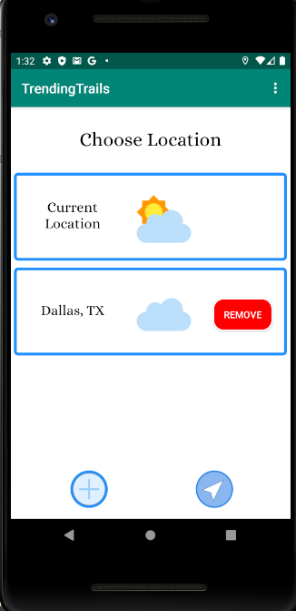

Trending Trails brings a plethora of features to the table. Click the links above to jump to the feature you wish to learn more about!
The principal feature of Trending Trails is the ability to map a custom route anytime anywhere. These routes can be tracked and saved for the community to follow, or for you to do again.
Mapping a route in Trending Trails is both simple and intuitive. First, navigate to the map using the map button on the home page. Then, when at the desired start point of the route, click
the "Start Tracking" button. Then, simply run/walk/hike the route, and click the finish tracking button. If you like the route, feel free to click "Yes" when asked if you'd like to save
and fill out the simple information form. This route will from then on be available to you and the community for future use.
In addition to mapping your own trails, Trending Trails also allows you to view trails that others have mapped and saved. To do this, navigate to the trail info page of the desired trail and click the map button. Alternatively, you can map any trail and click on the marker at the start point of your desired trail
Want to find a route close to you? Not to worry, Trending Trails provides a solution. Navigate from the home screen to the Trails Near Me page to view trails near you. You can choose between a 25 mile, 50 mile, 100 mile, and 100+ mile radius
One of the main goals when planning the Trending Trails development was to allow connections between users. One of the ways this app connects its users is through trail reviews. Trail reviews allow for users to give their unique perspectives to the same route, adding to the connected experience. To review a trail, first see the Mapping Existing Trails section. In this sectionn, you should see how to pull up a route that another user mapped. To review the trail, simply click the complete function and fill out the review form! Reviews can be viewed on the Trail Info page
When planning a hiking trip or run, one needs to know the conditions outside to pick the optimal time. Trending Trails helps you do this with a 7-day weather forecasting feature. This feature will tell you the predicted weather (sunny, cloudy, etc.) as well as the high and low temperatures Locations are listed by zip code. To add a location, simply click the "Add a Location" button at the bottom of the screen. If you want to know the weather at your current location but don't know the zip code, don't worry! Click the "Current Location" button to get the forecast. Once a location is added via zipcode, it will be saved on the page in the future. To view the forecast for this zipcode, click the block containing the zip code.
Part of the draw of Trending Trails is the ability to keep track of the trails you've done. To view the trails you've completed, you can navigate to the profile screen and click on the completed trails tab.
Much like viewing trails you've completed, Trending Trails allows you to keep track of the trails you've contributed. To view the trails you've completed, you can navigate to the profile screen and click the added trails tab